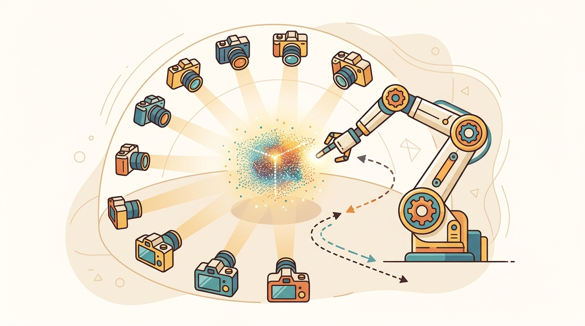

"Perception earns its keep when the next action gets safer, faster, or easier to debug."
A Patient Embodied AI Agent

This section assumes familiarity with coordinate frames and sensor-fusion concepts from section 4.1 and section 8.3. The SLAM memory format introduced here is taken further in section 29.5, which covers graph-based and visual SLAM in detail. The scene representations for manipulation are consumed directly by section 42.4, which shows how perception outputs feed pick-and-place and contact-rich pipelines, and the real2sim pipeline connects to the domain-randomization workflow in section 20.3.
A warehouse robot scans a shelf, builds a 3D map, transfers that map into simulation overnight, trains a grasp policy, and deploys it the next morning on a real arm. That pipeline works only because every stage agrees on a scene representation: SLAM hands a consistent pose-and-map to the real2sim converter, the simulator produces editable geometry and realistic materials for policy training, and the manipulation module tracks per-object contact state across a grasp. Pick the wrong format at any seam and the whole chain breaks. Right now, neural scene representations are collapsing what once required three separate engineering stacks into a single differentiable representation, making this the pivotal skill for anyone building robots that act reliably in the physical world. You will implement each layer and wire them together end to end.
Problem First: Why This Representation Exists
A static computer-vision system can stop when it names an object or produces a clean visualization. An embodied system cannot. The robot needs a representation that is tied to coordinates, uncertainty, latency, and an action interface, because a late or uncalibrated result can be more dangerous than no result at all.
For this section, the useful mental model is the perception-to-action contract. The perception module receives sensor evidence, estimates a compact state, exposes confidence and timing, and lets a planner or controller decide whether the next action is allowed. This is the bridge from coordinate frames and sensor estimation to the closed-loop evaluation discipline used in sim-to-real transfer.
A perception output is only embodied knowledge when it can change an admissible action, a recovery choice, or a safety margin. For a full treatment of this principle, see section 28.6. Here the same criterion is applied specifically to the handoff points between SLAM, real-to-sim transfer, and manipulation planning.
Figure 28.7.1 should be read as the Scene representations for robotics: SLAM, real2sim, manipulation handoff diagram: sensor evidence, geometric representation, uncertainty, latency, and action consumer are separate failure points.
Mathematical Core
A robot scene memory is best viewed as a set of query functions, not a single universal format.
$\mathcal M=\{q_{\mathrm{pose}},q_{\mathrm{free}},q_{\mathrm{contact}},q_{\mathrm{object}},q_{\mathrm{render}}\}$
Different tasks ask different queries. A renderer asks for appearance, a planner asks for free space, a manipulator asks for contact geometry, and a language planner asks for object relations. A mature system routes each query to the representation that can answer it safely.
- Write the downstream queries before choosing the map format.
- Separate safety-critical geometry from visualization-only memory.
- Keep object state updateable after contact, occlusion, or task progress.
- For real2sim, store provenance so synthetic scenes can be traced back to capture data and edits.
| Design Choice | Use When | Control Risk |
|---|---|---|
| Pose tracking | SLAM graph, visual-inertial odometry | Map inconsistency corrupts every downstream query. |
| Collision planning | Occupancy, Euclidean Signed Distance Field (ESDF), mesh, verified cloud | Rendering fields may be non-conservative. |
| Task reasoning | Object-centric scene graph | Relations can become stale after manipulation. |
| Visual replay | NeRF or 3DGS | Photorealism can hide missing control semantics. |
Think of a professional kitchen: the head chef keeps a whiteboard with table orders (task state), a posted floor plan showing which burners are hot (safety geometry), a live ticket rail with timing (freshness), and a plated-dish photo for reference (visual appearance). No single document serves all four purposes. Trying to run the kitchen from the photo alone would mean burning hands on burners that "look fine" in the image. A robot's scene memory works the same way: each query (where is free space? what does the scene look like? where is the object?) must go to the representation whose assumptions were designed for that specific question, not to whichever representation happens to look the most complete.
Students often assume that a visually convincing neural scene representation (NeRF or 3DGS) can serve as the single source of truth for all robot tasks, including collision avoidance, grasp planning, and localization. This is wrong in an embodied context because photorealism optimizes for appearance, not geometric conservatism or physical correctness: a splat can render a shelf flawlessly while encoding surfaces that are 3-5 cm off in depth, omit the free-space guarantee that safety-critical planners require, and become stale the moment an object moves. The correct mental model treats scene representation as a routing problem: each query (free-space check, object pose, visual replay, sim export) must be dispatched to the representation whose assumptions were designed to meet the action contract for that query.
Worked Miniature
The expected output routing table should be interpreted as a division of semantic labor across representations. The key lesson is that a visually rich model can own operator rendering while collision checking and grasp planning still demand geometry with stricter safety meaning.
Consider a concrete case. A warehouse mobile manipulator captures a 3-second RGB-D sweep of a shelf. The visual-inertial odometry front-end (NVIDIA Isaac ROS Visual SLAM) reports camera pose to within 8 mm at 30 Hz. From the same sweep, the arm planner updates an ESDF at 5 Hz with a 3 cm voxel resolution, giving itself a conservative free-space buffer. In parallel, a 3DGS model trained offline on 200 reference images drives the operator feed at 60 fps. When a box shifts 15 cm after a pick, the ESDF converges in 200 ms (one sensor cycle). The 3DGS model still shows the old pose until a re-capture fires. The arm planner correctly avoids the new position because it queries the ESDF, not the splat. A planner querying only the splat would see no change until the next full scan, leaving a 15 cm error that can cause a collision on the next pick attempt.
# Scene-memory routing table: dispatch each robotics query to the right representation
import numpy as np
# Simulated scene state: each representation owns a subset of queries
class ESDFMap:
"""Conservative signed-distance field for collision checking."""
def __init__(self, voxel_res=0.03):
self.voxel_res = voxel_res
# Toy 3-D grid: positive = free, negative = occupied, zero = surface
self.grid = np.ones((20, 20, 10), dtype=np.float32) * 0.5
self.grid[8:12, 8:12, :] = -0.05 # box obstacle
def query_free(self, xyz):
ix = int(xyz[0] / self.voxel_res) % 20
iy = int(xyz[1] / self.voxel_res) % 20
iz = int(xyz[2] / self.voxel_res) % 10
dist = float(self.grid[ix, iy, iz])
return {"sdf": dist, "is_free": dist > 0.0, "rep": "ESDF"}
class SplatRenderer:
"""3D Gaussian splat stub: owns only the visual render query."""
def query_render(self, camera_pose):
# In a real system this would invoke the 3DGS rasterizer
return {"rep": "3DGS", "fps": 60, "note": "visualization only"}
class ObjectGraph:
"""Scene graph: owns object state and relations."""
def __init__(self):
self.objects = {
"box_A": {"pose": np.array([0.24, 0.24, 0.0]), "class": "box",
"grasped": False, "fresh": True},
}
def query_object(self, name):
obj = self.objects.get(name, {})
return {"rep": "SceneGraph", **obj}
def route_query(query_type, esdf, splat, graph, **kwargs):
"""Dispatch each robotics query to its owner representation."""
if query_type == "avoid_collision":
return esdf.query_free(kwargs["xyz"])
elif query_type == "render_operator_view":
return splat.query_render(kwargs.get("camera_pose"))
elif query_type == "plan_grasp":
return graph.query_object(kwargs["object_name"])
else:
raise ValueError(f"Unknown query: {query_type}")
# Build the scene memory stack
esdf = ESDFMap(voxel_res=0.03)
splat = SplatRenderer()
graph = ObjectGraph()
# Three different consumers ask three different questions
queries = [
("avoid_collision", {"xyz": np.array([0.24, 0.24, 0.0])}),
("render_operator_view", {"camera_pose": np.eye(4)}),
("plan_grasp", {"object_name": "box_A"}),
]
for q_type, q_args in queries:
result = route_query(q_type, esdf, splat, graph, **q_args)
print(f"{q_type:25s} -> rep={result['rep']:12s} result={result}")
avoid_collision -> rep=ESDF result={'sdf': -0.05, 'is_free': False, 'rep': 'ESDF'}
render_operator_view -> rep=3DGS result={'rep': '3DGS', 'fps': 60, 'note': 'visualization only'}
plan_grasp -> rep=SceneGraph result={'rep': 'SceneGraph', 'pose': array([0.24, 0.24, 0. ]), 'class': 'box', 'grasped': False, 'fresh': True}ROS 2, SLAM systems, Open3D, Nerfstudio, and simulator import pipelines already provide pieces of this routing. The engineering task is to keep provenance, timestamps, frame transforms, and query ownership explicit.
A real2sim scene that looks correct can still be physically wrong if mass, friction, joint limits, collision geometry, or object poses are not audited.
Real2sim transfer matters because training a manipulation policy entirely in a hand-crafted simulator requires every object geometry, mass, and friction to be specified by hand. On a real shelf with dozens of novel products, that is not feasible. Without real2sim, the policy trains on geometry that does not match the physical object, and sim-to-real transfer fails at contact: the simulated grasp succeeds while the physical grasp slips or misses entirely.
The transfer works in three steps. First, the SLAM-registered point cloud or mesh is exported to a collision-ready format (OBJ or USD). Second, physical properties (mass from a scale reading, friction from a slip test) are attached as metadata. Third, a simulator importer (MuJoCo's obj2mjcf or Isaac Sim's USD pipeline) instantiates the scene, replacing default parameters with the measured values. The result is a simulator state whose geometry and dynamics are anchored to a specific real-world capture.
When exporting a scanned mesh into MuJoCo via the obj2mjcf tool, the auto-generated geom elements default to conaffinity="1" and condim="3", which enables friction but uses the global friction value (0.5, 0.005, 0.0001) rather than any measured value. Before running any grasp policy, override the friction attribute on each object geom with values measured from a physical slip test; a 20% error in the lateral friction coefficient is enough to flip a stable grasp to a slip in simulation. In Isaac Sim, the equivalent parameter lives under the PhysicsMaterialAPI prim as staticFriction and dynamicFriction: the default 0.5/0.5 is rarely correct for smooth plastic or metal objects encountered in real warehouses.
Neural fields (NeRF, 3DGS) are baked at capture time and do not update as the robot acts. If SLAM accumulates drift or a loop-closure correction shifts the map by even 2-3 cm, the neural field's coordinate frame is now misaligned with the live SLAM frame. Any planner or grasp system that reads object positions from the neural field will act on stale, offset geometry. The fix is to store neural field assets with the SLAM keyframe graph and re-anchor or re-render when a loop closure fires. Systems that skip this step frequently pass visual QA (the rendered image still looks correct) but fail contact-level tasks.
A Boston Dynamics style inspection robot might use visual-inertial SLAM for pose, an ESDF for safe footstep or body clearance, object memory for task state, and splats or NeRFs for operator visualization.
For Scene representations for robotics: SLAM, real2sim, manipulation, the perception result must answer what action changed, what uncertainty changed, and what log would reproduce the decision. Otherwise the output is still visualization, not embodied evidence.
Debugging And Evaluation
Evaluate each representation inside the same action loop that will consume it, logging the sensor stream, calibration version, frame transform, and failure label so the comparison is construct-matched. For the full debugging protocol, see section 28.6. The key addition for multi-representation systems is verifying that the routing table itself is logged: when a query is dispatched to the wrong owner (for example, a grasp planner reading from a splat rather than the ESDF), the failure label must capture the mis-route, not just the downstream contact error.
Direction 1: Language-conditioned scene graphs for manipulation planning. Rather than hand-crafting object relations, 2024-2025 work grounds scene graphs directly in vision-language models (VLMs). RoboPoint (Yuan et al., NeurIPS 2024) and SpatialBot (2024) show that a VLM queried with a natural-language task can emit spatial affordance maps that update the scene graph in-place, letting a planner ask "where do I place the mug?" without a separate spatial reasoning module. The open challenge is keeping these graphs consistent under partial occlusion and after contact events.
Direction 2: Gaussian splatting as a live, editable simulation asset. PhysGaussian (Xuan Li et al., CVPR 2024) and GaussianWorld (2025) extend 3DGS by attaching material and mass parameters to each Gaussian, so the splat can be directly simulated under physics without mesh conversion. This collapses the real2sim pipeline from three steps (scan, mesh, import) to one, but current methods break down for thin structures and articulated objects whose part boundaries the Gaussians do not respect.
Direction 3: Contact-informed neural reconstruction for sub-millimeter grasping. Tactile feedback is being used to refine neural geometry in real time. The Touch-GS work (Swann et al., 2024, RSS) fuses GelSight tactile readings with 3DGS to tighten surface estimates from 3-5 mm RGB-D error to under 0.5 mm in contact regions, enabling precision tasks such as peg-in-hole at tolerances current vision-only reconstructions cannot reach.
Open problem for PhD research: None of the above systems maintain a single coherent representation that is simultaneously safe for collision avoidance (conservative ESDF), fast enough for 30 Hz re-planning (splat rasterizer), and precise enough for contact-rich manipulation (sub-mm SDF). The open problem is designing a principled query-routing architecture that keeps these three representations synchronized under asynchronous updates from SLAM loop closures, manipulation contact events, and language-driven scene-graph edits, while providing provable freshness and safety guarantees to each downstream consumer.
Project Ideas
Beginner (weekend): SLAM-to-MuJoCo shelf scene. Use a ROS 2 SLAM toolbox to map a small tabletop area with a depth camera, export the registered point cloud to OBJ with Open3D, then import it into MuJoCo using obj2mjcf and drop a Gymnasium environment on top so you can teleoperate a simulated arm over the real geometry. The key challenge is getting the coordinate frame and scale consistent between the ROS map frame and MuJoCo's world frame without manual tuning.
Intermediate (1-2 weeks): Real2sim grasp policy with domain-randomized friction. Scan five household objects with an RGB-D camera, transfer their meshes into Isaac Lab via the USD pipeline, measure physical friction coefficients with a simple tilt test, and train a LeRobot diffusion policy that randomizes friction within measured bounds. The key challenge is auditing each simulated geom's PhysicsMaterialAPI parameters so the trained policy's contact assumptions actually match the physical objects at deployment.
Chapter 29 takes scene representation one step further into simultaneous localization and mapping, where the robot must build and use the same map at the same time while its own pose remains uncertain.
Section References
NVIDIA. Isaac ROS Visual SLAM documentation. https://nvidia-isaac-ros.github.io/repositories_and_packages/isaac_ros_visual_slam/index.html
Practical visual-inertial odometry component for robotics navigation.
Nerfstudio documentation. https://docs.nerf.studio/
Maintained framework for neural scene representations used in real2sim and visualization workflows.
Open3D. Geometry and pipelines documentation. https://www.open3d.org/docs/release/
Practical geometry processing reference for robotics scene memory.
Can you name the representation, the consuming action, the uncertainty or freshness field, and the failure label for Scene representations for robotics: SLAM, real2sim, manipulation? If any one is missing, the section is not yet ready for a robot replay log.
There is no universal scene representation for robotics. Strong systems route each query to the representation whose assumptions match the action and risk.
Design a scene-memory stack for a mobile manipulator in a kitchen. Assign separate representations for localization, collision checking, object reasoning, visual replay, and simulation export.